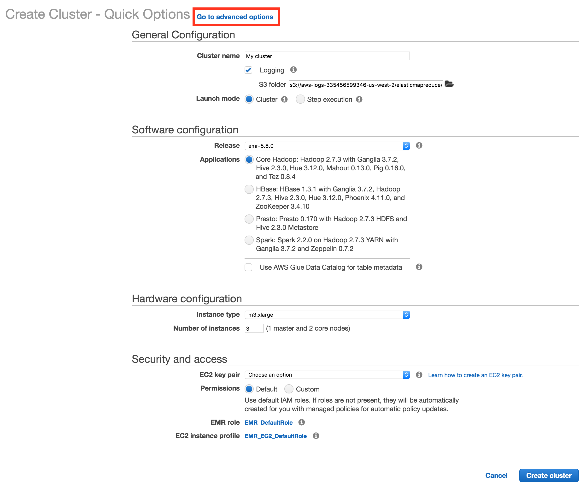
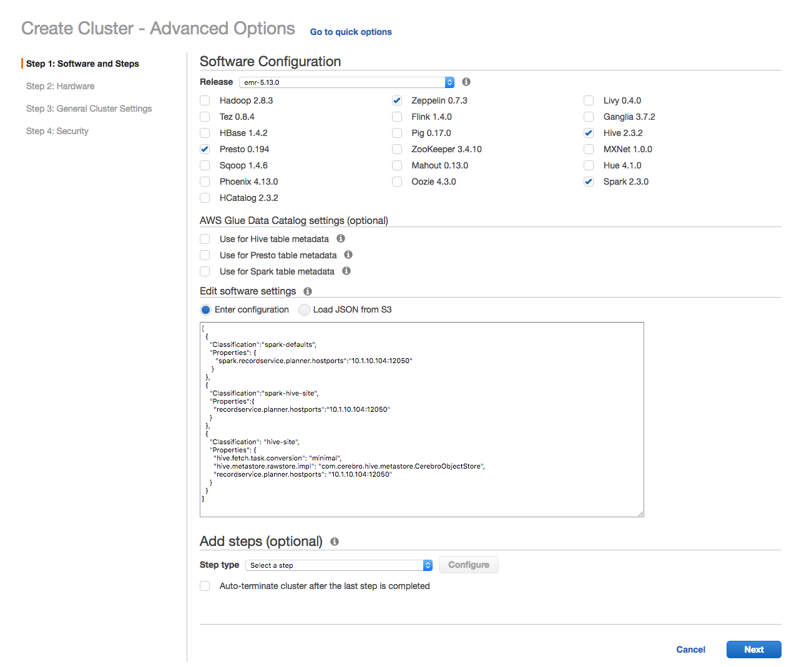
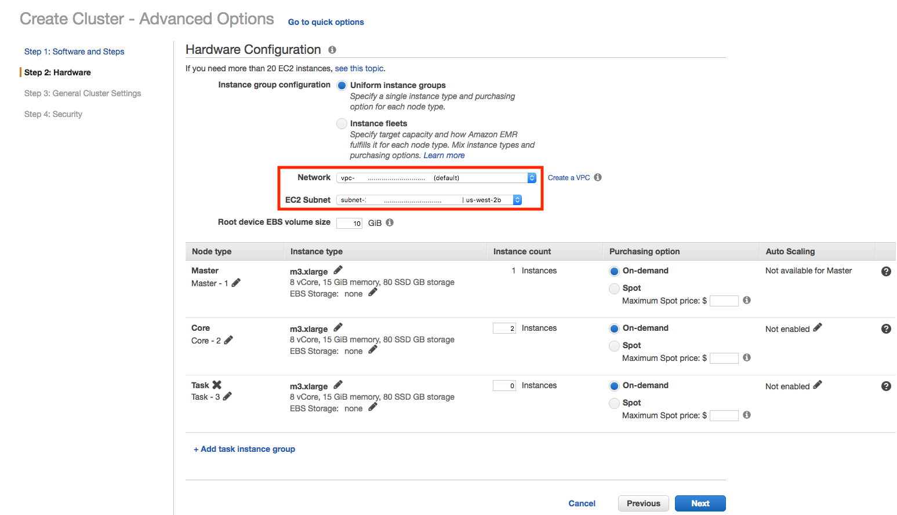
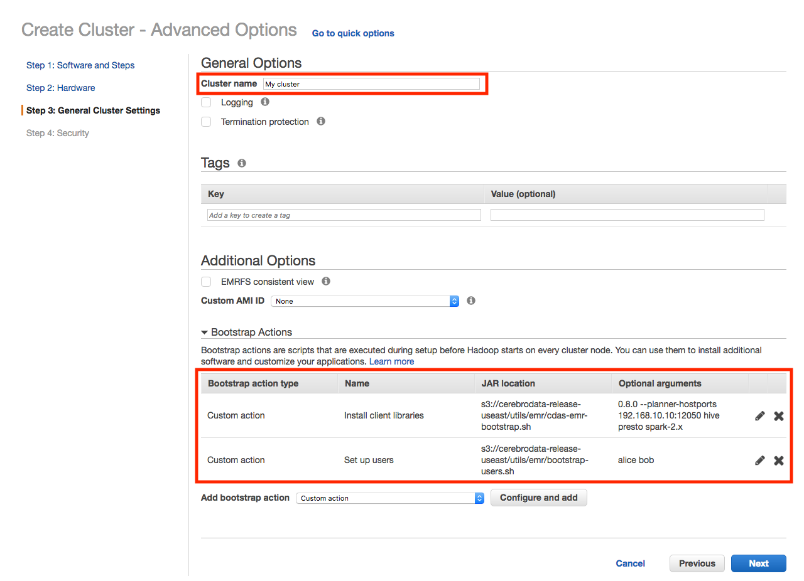
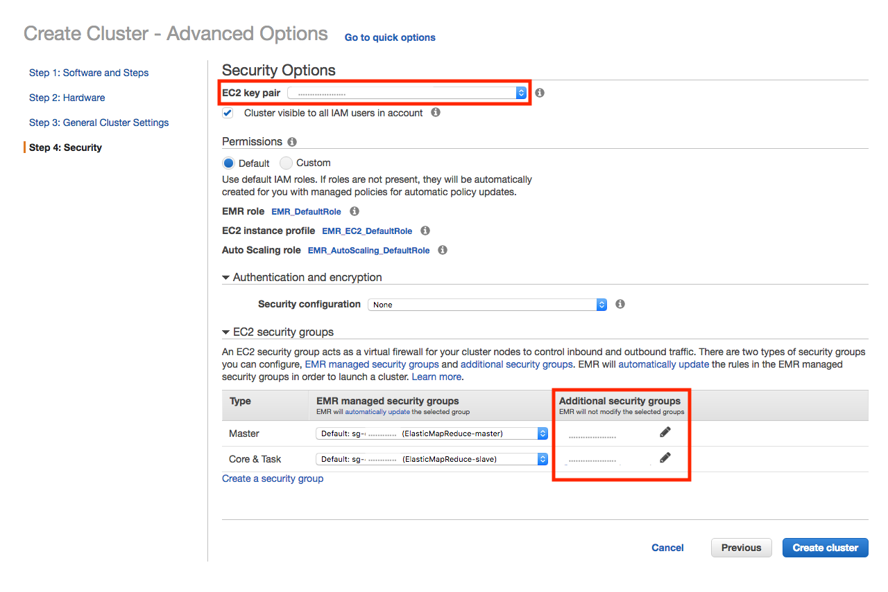
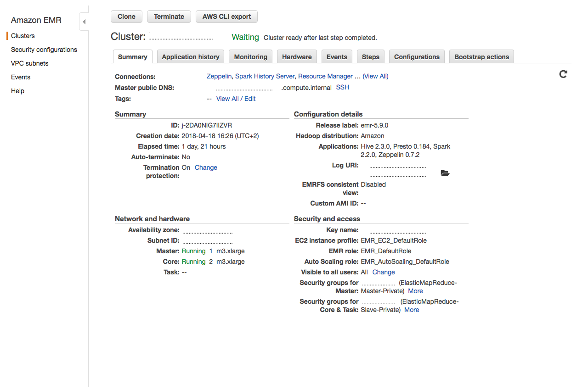

Okera Data Access Service EMR Integration
This documents describes how to use Okera Data Access Service (ODAS) from EMR and how to configure each of the supported EMR services. It assumes that the ODAS cluster is already running.
As part of the EMR set up, we will specify the following:
-
A bootstrap action to download the Okera client libraries on the EMR cluster nodes
-
A bootstrap script to set the appropriate user account permissions on the EMR cluster
-
A configuration to set the client libraries to use the existing ODAS installation
This is optional for some components, but required for Hive, Spark, and Presto. An EMR cluster that is using multiple components should apply each configuration.
Note: EMR versions 5.1.0 through 5.9.0 are supported by the latest bootstrap scripts.
Bootstrap Scripts
The following subsections discuss the mentioned bootstrap scripts provided for ODAS. These scripts can be run on an existing EMR cluster, or specified as part of the bootstrap actions when creating an EMR cluster using the AWS web-based UI. The subsections show the interactive usage of the scripts, while the end-to-end example is showing their use in the AWS UI.
EMR Node Bootstrap
The first bootstrap action places the client jars in the /usr/lib/cerebro directory and creates links into component-specific library paths.
To configure an EMR cluster, run the script, and specify the version and components you have installed.
The bootstrap script is located at:
s3://cerebrodata-release-useast/utils/emr/cdas-emr-bootstrap.sh
Script Usage
cdas-emr-bootstrap.sh <odas_version> [options] <list_of_components>
Options
--planner-hostports <hostports>– Link to thecerebro_planner:plannerendpoint--init <initScript>– s3 path init script to be run as part of bootstrap This is useful to set env variables like HTTP_PROXY. This script is needed if the EMR installation and bootstrap script needs to run from uswest AWS region exclusively. To use uswest region, set the following in the init script.export CEREBRO_BITS_REGION=uswest
Notes:
- See IP Address Management for details on how to retrieve the Planner endpoint
- See Client Integration for information on the
<hostports>parameter
For example, to bootstrap a Spark 2 cluster from the Okera 1.0.1 release, provide the arguments 1.0.1 spark-2.x (the --planner-hostports and other parameters are omitted for the sake of brevity).
If running EMR with Spark 2 and Hive, provide 1.0.1 spark-2.x hive.
The complete list of supported components are:
- Apache Spark 2 (
spark-2.x) - Apache Hive (
hive) - Presto (
presto)
Non-compute components can also be used and do not require any ODAS-related steps. These include:
- Apache Zeppelin
- Ganglia
- Apache ZooKeeper
- Apache Hue
User Setup Bootstrap
For the second bootstrap action, the following script is used to configure one or more users:
s3://cerebrodata-release-useast/utils/emr/bootstrap-users.sh
Run this script for at least one user (likely the default EMR user, hadoop).
Script Usage
bootstrap-users.sh <list_of_users>
The <list_of_users> is delimited by spaces.
Example: Setting up an EMR cluster for users alice and bob
bootstrap-users.sh alice bob
This script
- creates the group
cerebro; - creates a background script in
/tmp/for each service account (that is,hive,presto,spark, andyarn), waiting for the given account to exist; - adds the account to the
cerebrogroup; - sets the expected permissions on both the given user’s home directory and the
.cerebrodirectory within their home directory.
The preceding steps result in the EMR service users having permission to read (and possibly write) a user’s token, because of their membership in the okera group.
Group membership enables the Okera client libraries to authenticate the user by passing the user’s token to the ODAS cluster with each call.
End-to-End Operational Example
As an end-to-end operational example, we will start up a multi-tenant EMR cluster running Spark 2.x, Hive, and Presto, configured to run against an existing ODAS Planner running at odas-planner-1.internal.net:12050.
Notes:
- Multi-tenant here means that each EMR user is assigned their own authentication token. This is the default and the recommended way of configuring the cluster.
- See IP Address Management for details on how to retrieve the actual Planner endpoint, and why using a DNS registered name is recommended.
Prerequisites
Follow these initial steps to start with the cluster setup:
- Start at the AWS UI with the EMR service selected.
- Click on the blue “Create cluster” button and wait for the next page to open.
- Select “Go to advanced options” at the top of the “Create Cluster” screen:

You are now ready to perform the UI-based cluster creation process, explained next.
Step 1: Choose your components.
Pick Spark, Hive, and Presto from the list of EMR components.

Set the Spark and Hive specific configuration options, by copy and pasting the following JSON:
[
{
"Classification":"spark-defaults",
"Properties": {
"spark.recordservice.planner.hostports":"odas-planner-1.internal.net:12050"
}
},
{
"Classification":"spark-hive-site",
"Properties":{
"recordservice.planner.hostports":"odas-planner-1.internal.net:12050"
}
},
{
"Classification": "hive-site",
"Properties": {
"hive.fetch.task.conversion": "minimal",
"hive.metastore.rawstore.impl": "com.cerebro.hive.metastore.CerebroObjectStore",
"recordservice.planner.hostports": "odas-planner-1.internal.net:12050"
}
}
]
Notes:
- If you follow this example with a different ODAS Planner endpoint, please adjust the address and port to match your setup.
- Additional configuration examples are found in the program-specific sections below.
- Optionally, pick, for example, Hue and Zeppelin as components that do not require ODAS related configuration options.
Step 2: Use your preferred EMR hardware setup.
Ensure that you assign the proper VPC and EC2 Subnet to the cluster, which includes the requirement of the ODAS and EMR cluster being able to communicate with each other. All the other options, regarding the instance types and EBS volume size, are based on your needs and can be selected as you see fit.

Notes:
- You typically only need the “Master” and “Core” node types, as the “Task” nodes are optional.
Step 3: Set your cluster name and bootstrap scripts.
First, name your cluster something other than the default.
Second, configure the EMR cluster to use the Okera bootstrap scripts. Do the following for the ODAS libraries script:
- Add a “Custom action” under bootstrap actions.
- Set the script/JAR path to
s3://cerebrodata-release-useast/utils/emr/cdas-emr-bootstrap.sh. - In the “Optional arguments” box enter (all in one line):
- The ODAS version number this EMR is configured with.
- The
--planner-hostportsoption with the proper ODAS Planner endpoint. - The list of supported components to the bootstrap script.
Since we’re starting with Hive, Presto and Spark, specify
hive,presto, andspark-2.x.
For example, copy and paste this (and adjust as needed) into the “Optional arguments” box:
1.0.1 --planner-hostports odas-planner-1.internal.net:12050 hive presto spark-2.x
Notes:
- All options should be specified before the list of components.
For the user bootstrap script:
- Add another “Custom action” under bootstrap actions.
- Set the script/JAR path to
s3://cerebrodata-release-useast/utils/emr/bootstrap-users.sh. - In the “Optional arguments” box enter the space-separated list of users to the script options (all in one line).
For example:
hadoop alice bob.

Step 4: Set up the security options.
Select an EC2 key pair to use for the EMR cluster. This is needed later on to configure the cluster nodes with per-user tokens.
Also, specify additional security groups in order for the EMR cluster to communicate with the ODAS cluster. Add whatever security groups you specified for the ODAS hosts to the Master, Core, and, optionally, Task rows.

Step 5: Create the EMR cluster and wait for it to be ready.
The Okera components have been installed and configured when the cluster reports a ready status.

Since this is a multi-tenant cluster, care must be taken to manage users that have access to this cluster. Each user can authenticate to Okera with their own token, using access control, handled by Okera. When the user is authenticated, Okera uses the username specified in the token.
Note: The EMR username does not need to be the same as the subject in the user access token.
The token can be installed with the following commands:
echo "<longstringtoken>" > ~/.cerebro/token
The <longstringtoken> placeholder must be replaced with the user’s string token.
These commands need to be executed on every instance in the EMR cluster.
The .cerebro directory is created by the bootstrap-users.sh.
It is highly recommended to use that script to create this directory as it ensures that permissions are set correctly.
Step 6: Querying data. The user can now use the following EMR components to access data managed by Okera:
Example: Accessing data with Presto’s CLI
$ presto-cli --server localhost:8889 --catalog hive --schema default
presto:default> show catalogs;
Catalog
---------------
hive
recordservice
system
(3 rows)
Query 20180421_102629_00002_fhhrx, FINISHED, 1 node
Splits: 1 total, 1 done (100.00%)
0:00 [0 rows, 0B] [0 rows/s, 0B/s]
presto> show tables in recordservice.okera_sample;
Table
--------
sample
users
(2 rows)
Query 20180421_102722_00003_fhhrx, FINISHED, 2 nodes
Splits: 18 total, 18 done (100.00%)
0:00 [2 rows, 59B] [6 rows/s, 185B/s]
presto> select * from recordservice.okera_sample.sample;
record
---------------------------------
This is a sample test file.
It should consist of two lines.
(2 rows)
Query 20180421_102742_00004_fhhrx, FINISHED, 1 node
Splits: 17 total, 17 done (100.00%)
0:00 [2 rows, 0B] [5 rows/s, 0B/s]
Example: Accessing data with Hive
$ hive
hive> show databases;
OK
default
okera_sample
cerebro_system
demo
Time taken: 0.768 seconds, Fetched: 4 row(s)
hive> select * from okera_sample.sample;
OK
This is a sample test file.
It should consist of two lines.
Time taken: 2.292 seconds, Fetched: 2 row(s)
Example: Accessing data with Beeline
$ beeline -u jdbc:hive2://localhost:10000/default -n hadoop
beeline> show tables in okera_sample;
+-----------+
| tab_name |
+-----------+
| sample |
| users |
+-----------+
2 rows selected (1.652 seconds)
beeline> select * from okera_sample.users limit 100;
+---------------------------------------+------------+---------------+----------------------+
| users.uid | users.dob | users.gender | users.ccn |
+---------------------------------------+------------+---------------+----------------------+
| 0001BDD9-EABF-4D0D-81BD-D9EABFCD0D7D | 8-Apr-84 | F | 3771-2680-8616-9487 |
| 00071AA7-86D2-4EB9-871A-A786D27EB9BA | 7-Feb-88 | F | 4539-9934-1924-5730 |
...
| 009C0C19-A239-4137-9C0C-19A2396137B5 | 12-Nov-76 | F | 5231-8965-0777-9503 |
| 009D9636-58C3-46EA-8743-B6D5BC7D3057 | 21-Feb-72 | M | 3409-4704-3840-6971 |
+---------------------------------------+------------+---------------+----------------------+
100 rows selected (2.854 seconds)
Example: Accessing data with Spark shell (Scala)
$ spark-shell
scala> val df = spark.sql("select * from okera_sample.sample")
df: org.apache.spark.sql.DataFrame = [record: string]
scala> df.show()
+--------------------+
| record|
+--------------------+
|This is a sample ...|
|It should consist...|
+--------------------+
Access Token Management
Okera supports multi-tenant EMR clusters, as each Okera connection includes the caller’s token. Requests by users on the same EMR cluster using different tokens are independently authorized by Okera’s access controls. They potentially see different data.
It is the responsibility of the EMR cluster to make sure that it is not easy for users on the same cluster to access other users’ tokens or data.
The token is never logged in its entirety by Okera, but the user needs to make sure that the token is not accidentally exposed through the OS.
For a secure multi-tenant cluster, Okera recommends users do not log in as the same user (for example, hadoop) and that the users logging in do not have root permissions.
Otherwise, the local cluster OS is not secure.
Similarly, not logging in as the same user, prevents users from viewing each other’s intermediate files in HDFS.
Note: The EMR user does not have to match the token’s subject. Okera authenticates the user using the token only.
Adding users to a running cluster
To add a user to a running EMR cluster that has already been ODAS bootstrapped, you can run /usr/lib/cerebro/add-users.sh.
Identical to bootstrap-users.sh, this takes a space-separated list of users. This script assumes that boostrap-users.sh has been run already and will only add additional users.
This script will create the user and the .cerebro home directory with the proper permissions.
In a common pattern, we expect system users such as hadoop to be bootstrapped at cluster creation time and additional users be added after.
Per-Component Configuration
The configurations required to configure each supported EMR component are detailed in this section.
You need to enter the JSON-based settings, listed below, while creating the EMR cluster, as shown in the end-to-end example. Otherwise you will need to modify the appropriate configuration files manually and restart the service(s); this applies to all EMR cluster nodes.
With all components, Okera requires specifying the ODAS Planner hostport (for example, odas-planner-1.internal.net:12050, which is used throughout this document).
You also need to have configured the access token as explained in Access Token Management.
Warning: Previous versions of ODAS included a single-tenant approach, which configured a shared, per-service token in the configuration files of each service. This approach is no longer recommended anymore (due to its complexity) and should not be used anymore. Instead for single tenant clusters, simply bootstrap the hadoop user and place the token in this users home directory.
Spark
Setting up Spark
Use the following JSON configuration properties to set up Spark with an existing ODAS Planner:
[
{
"Classification":"spark-defaults",
"Properties": {
"spark.recordservice.planner.hostports":"odas-planner-1.internal.net:12050"
}
},
{
"Classification":"spark-hive-site",
"Properties":{
"recordservice.planner.hostports":"odas-planner-1.internal.net:12050"
}
}
]
If you have an existing EMR cluster or prefer to manually edit the configuration files for Spark, you will have to change the following two files by adding the above settings:
File /etc/spark/conf/spark-defaults.conf:
$ cat /etc/spark/conf/spark-defaults.conf
...
spark.recordservice.planner.hostports odas-planner-1.internal.net:12050
File /etc/spark/conf/hive-site.xml:
$ cat /etc/spark/conf/hive-site.xml
...
<property>
<name>recordservice.planner.hostports</name>
<value>odas-planner-1.internal.net:12050</value>
</property>
</configuration>
Using Spark
Once the cluster is set up, you can interact with the Spark shell as follows:
scala> val df = spark.sqlContext.read.format("com.cerebro.recordservice.spark").load("<DB.TABLE>")
scala> df.show()
See the end-to-end example for more.
Hive
Setting up Hive
In addition to Planner endpoint, Hive requires two to settings to integrate with the Okera catalog:
[
{
"Classification": "hive-site",
"Properties": {
"hive.fetch.task.conversion": "minimal",
"hive.metastore.rawstore.impl": "com.cerebro.hive.metastore.CerebroObjectStore",
"recordservice.planner.hostports": "odas-planner-1.internal.net:12050"
}
}
]
If you have an existing EMR cluster or prefer to manually edit the configuration files for Hive, you will have to change the following file by adding the above settings:
File /etc/hive/conf/hive-site.xml:
$ cat /etc/hive/conf/hive-site.xml
...
<property>
<name>hive.fetch.task.conversion</name>
<value>minimal</value>
</property>
<property>
<name>recordservice.planner.hostports</name>
<value>odas-planner-1.internal.net:12050</value>
</property>
<property>
<name>hive.metastore.rawstore.impl</name>
<value>com.cerebro.hive.metastore.CerebroObjectStore</value>
</property>
</configuration>
Using Hive
Hive is operated through either the hive or beeline command as shown below.
$ hive
hive> show databases;
hive> select * from okera_sample.sample;
For Beeline, users must specify their local Unix user (for example, hadoop) at connection time:
$ beeline -u jdbc:hive2://localhost:10000/default -n hadoop
beeline> show tables in okera_sample;
beeline> select * from okera_sample.users limit 100;
See the end-to-end example for more.
Cluster-local Databases
With the default install, the Hive Metastore (HMS) running on the cluster populates all of its contents from the Okera Catalog. In some cases, it could be useful to use HMS to register cluster-local (that is, temporary) tables, for example, for intermediate query results.
This can be done by configuring the set of databases that should only exist locally, either during bootstrap or by updating hive-site.xml and restarting the EMR HMS.
For example, the setup could be configured so that any Hive operation to the database localdb is cluster-local; this includes tables, views, and so forth.
This database is never reflected in Okera and access to data or metadata in these databases do not use Okera.
If Spark is included in the EMR cluster, the global_temp database is automatically setup to be cluster-local.
Local DBs are also useful in creating materialized views (caches of datasets from queries) for faster access.
An example would be to create a table in localdb using data from Okera datasets (using the CREATE TABLE AS SELECT statement).
Example: Creating a table in localdb
CREATE TABLE localdb.european_users AS SELECT * FROM users WHERE region = 'europe'
The location for these tables can be changed to an S3 bucket.
This can be set in hive-site.xml.
Example: Changing table locations to an S3 bucket
<property>
<name>hive.metastore.warehouse.dir</name>
<value>s3://okera/warehouse</value>
<description>location of default database for the warehouse</description>
</property>
External storage location is supported for S3 buckets only.
In the case where the local database has the same name as an Okera database, the local database takes precedence, and the user is not able see the contents in that Okera database from Hive.
Example: Configuring local databases in hive-site.xml
<property>
<name>cerebro.local.dbs</name>
<value>localdb,testdb</value>
<description>
Comma-separate list of local database names. These don't need to already exist.
</description>
</property>
Example: Configuring local databases using bootstrap script
{
"Classification": "hive-site",
"Properties": {
"cerebro.local.dbs": "localdb,testdb"
}
}
Note on local DBs
Any local database, and the datasets in it, are not accessible by ODAS. The local database is ephemeral and is lost when the EMR cluster is shutdown. If the storage is externalized to S3, or shared HDFS, then a new external table definition, with location set to the S3 folder, could be used to access the dataset.
Known Incompatibilities
In the context of a ODAS installation, Hive uses externalized metadata managed by ODAS. As a result, it is not possible to alter the location of a table or partition to an Okera dataset by way of Hive. Instead, altering the location is done through a native Okera client like the odb client.
Hive treats external tables, created using Hive against ODAS, as external, non-native types.
ALTER TABLE is not supported on external, non-native tables.
Example: Using odb to alter the table location
odb dataset hive-ddl "alter table okera.users set location 's3a://okera/correctedlocation'"
Limitations
Note: The ODAS authorization is not currently supported from the Hive CLI. For example,
SHOW ROLESdoes not list the ODAS roles.
SQL data manipulation (DML), such as INSERT statements, is not supported in Hive.
Presto
Setting up Presto
Presto requires configurations to be passed as arguments to the ODAS provided bootstrap script instead of providing them as configurations, but otherwise requires similar configs as the other components.
Note: The options must come before the list of components.
Example:
cdas-emr-bootstrap.sh 1.0.1 --planner-hostports odas-planner-1.internal.net:12050 presto
See the EMR Node Bootstrap section for more details.
Using Presto
Once the EMR cluster is launched, and the token has been stored (if necessary) you can interact with the presto-cli as you typically would.
Example: Displaying catalogs using presto-cli
$ presto-cli
presto> show catalogs;
This should return recordservice among others.
Example: Querying metadata and select from tables
presto> show tables in recordservice.okera_sample;
presto> select * from recordservice.okera_sample.sample;
Known Limitations
DDL and DML commands (besides select) are not supported in Presto.
Logging
On the EMR instances, the bootstrapping logs are located in /var/log/bootstrap-actions/.
This is helpful if the cluster is not starting up and could indicate a misconfiguration of the bootstrap action.
Presto
EMR precludes us from fully configuring logging for Presto.
To complete the configuration, edit the file located at /etc/presto/conf.dist/jvm.config, and add this line to its end (applies to all cluster nodes):
-Dlog4j.configuration=file:/etc/presto/conf/log4j.properties
In order for the Okera Presto plugin to log correctly, restart the Presto services on all of the nodes in the cluster.
Configs
Configs are generally written to /etc/[component].
Configs should replicate the configurations that were specified during cluster creation.
Updating ODAS Client Libraries
The ODAS client libraries are located in the /usr/lib/cerebro directory on each of the EMR instances.
To upgrade the ODAS client, become root user, download the client library, and restart the corresponding services.
Replace <odas_version> with the version of the ODAS client to which you are upgrading.
To restart the services, refer to
Amazon’s service restart instructions.
Updating Client Libraries: Presto
-
SSH to each EC2 node in the EMR cluster and perform the following:
cd /usr/lib/cerebro curl -O https://s3.amazonaws.com/cerebrodata-release-useast/<odas_version>/client/recordservice-presto.jar -
Restart the Presto server on all the EC2 nodes:
stop presto-server start presto-server
Updating Client Libraries: Hive
-
SSH to each of the EC2 nodes in the EMR cluster and do the following:
cd /usr/lib/cerebro/ curl -O https://s3.amazonaws.com/cerebrodata-release-useast/<odas_version>/client/recordservice-hive.jar -
On the master EC2 node, download the Hive metastore jar and restart both the Hive server and the Hive metastore:
cd /usr/lib/cerebro/ curl -O https://s3.amazonaws.com/cerebrodata-release-useast/<odas_version>/client/cerebro-hive-metastore.jar stop hive-hcatalog-server stop hive-server2 start hive-hcatalog-server start hive-server2